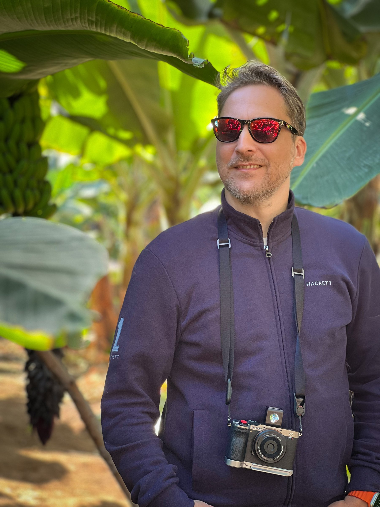

Soy Miguel Ángel López, fotógrafo de Madrid.
La fotografía comenzó como una afición, pero terminó llevándome durante varios años al ámbito profesional. Trabajé para una agencia internacional cubriendo acontecimientos deportivos y eventos de actualidad, fotografiando desde competiciones nacionales hasta algunas de las citas más importantes del deporte mundial.
Durante esa etapa tuve la oportunidad de cubrir tres finales de la UEFA Champions League, una final de la Copa del Mundo de Baloncesto, un Campeonato del Mundo de Balonmano y varias temporadas siguiendo la actualidad de los principales equipos de fútbol de Madrid.
Con el tiempo decidí dejar aquella etapa profesional. La fotografía volvió a ocupar el lugar donde siempre había nacido: el de una pasión personal.
Hoy regreso a ella con la experiencia acumulada durante aquellos años y una mirada diferente. Ya no persigo la noticia ni el resultado de un partido. Me interesan las escenas cotidianas, las luces, las sombras y esos pequeños momentos que suelen pasar desapercibidos.
Trabajo principalmente en blanco y negro, aunque también desarrollo proyectos personales en color y experimento con distintas cámaras y procesos fotográficos.